Beautifully handcrafted in our Hatton Garden London studio, the Budrevich collection features timeless classics and bespoke designs using only the finest, ethically sourced GIA certified diamonds.
Whether you’re looking for a classic solitaire or a shimmering halo, we can help you create the perfect proposal with a truly personal, handmade engagement ring.
- engagement rings

- solitaire rings
- halo rings
- three stone rings
- diamond set band rings
- wedding rings
- earrings
- guides & articles
- design process
- reviews
- contact us


A guide to the most popular diamond shapes for an engagement ring
A guide to the most popular diamond shapes for an engagement ring
Otherwise known as the “cut”, the shape of a diamond is extremely important when it comes to the overall aesthetic of your engagement ring. Exploring the different options is one of the most exciting aspects of shopping for a ring because a diamond’s shape greatly affects the look and feel of a design.
Some clients know precisely which diamond shape they want right from the start, while others are open to exploring the different cuts, each of which has its own unique properties…
Some clients know precisely which diamond shape they want right from the start, while others are open to exploring the different cuts, each of which has its own unique properties…
Round brilliant cut diamond
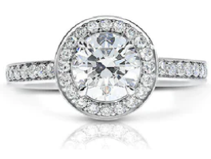
The most popular diamond shape by a long way, the round brilliant cut is a much-loved classic. With 58 facets, each perfectly positioned to catch the light, it sparkles with remarkable brilliance — more than any other diamond, which is one of the main reasons brides to be are drawn to this timeless cut.
The modern round brilliant cut was invented in 1919 by diamond cutter Marcel Tolkowsky, who was also a mathematician and engineer. In the past, old round cut diamonds were polished to shine brightest beneath candlelight. However, surrounded by talk of 'the perfect diamond cut', Tolkowsky was determined to find a new diamond cut that delivered maximum sparkle beneath the electric lighting that was illuminating workplaces and homes for the first time. The round brilliant cut was an instant success and transformed the world of diamonds forever more.
A round brilliant cut diamond looks sensational showcased in a very simple setting that allows the pure beauty of the centre stone to take centre stage. Even in stones of smaller sizes, round brilliants produce unrivalled scintillation, making them an excellent choice for an engagement ring, whatever your budget.
The modern round brilliant cut was invented in 1919 by diamond cutter Marcel Tolkowsky, who was also a mathematician and engineer. In the past, old round cut diamonds were polished to shine brightest beneath candlelight. However, surrounded by talk of 'the perfect diamond cut', Tolkowsky was determined to find a new diamond cut that delivered maximum sparkle beneath the electric lighting that was illuminating workplaces and homes for the first time. The round brilliant cut was an instant success and transformed the world of diamonds forever more.
A round brilliant cut diamond looks sensational showcased in a very simple setting that allows the pure beauty of the centre stone to take centre stage. Even in stones of smaller sizes, round brilliants produce unrivalled scintillation, making them an excellent choice for an engagement ring, whatever your budget.
Marquise cut diamond
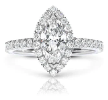
With their elongated elliptical shape tapering to two pointed tips, marquise cut diamonds are the maverick of the gemstone world. Defiantly different, they are stylish and original, with a dramatic shape believed to date back to the reign of King Louis XIV, who purportedly commissioned his royal jeweller to create a diamond that mimicked the shape of his lover, the Marquise de Pompadour's mouth.
While their sharp ends might not immediately seem practical for a jewel that will be worn every day, marquise diamonds make spectacular centre stones in an engagement ring. With the right setting, the pointed tips can be softened so that they won't catch on clothes.
A brilliant cut comprised of 58 facets, the marquise cut displays excellent fire and brilliance. Essentially an oval shape diamond with pointed ends, it does have a tendency to display the “bowtie” effect outlined above, which is why it's important to opt for the best quality diamond within your budget. If you do, you will be richly rewarded with an original engagement ring that is the epitome of unique.
While their sharp ends might not immediately seem practical for a jewel that will be worn every day, marquise diamonds make spectacular centre stones in an engagement ring. With the right setting, the pointed tips can be softened so that they won't catch on clothes.
A brilliant cut comprised of 58 facets, the marquise cut displays excellent fire and brilliance. Essentially an oval shape diamond with pointed ends, it does have a tendency to display the “bowtie” effect outlined above, which is why it's important to opt for the best quality diamond within your budget. If you do, you will be richly rewarded with an original engagement ring that is the epitome of unique.
Pear shape diamond

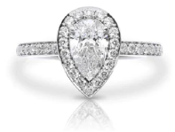
A unique hybrid of two different diamond cuts — the round brilliant and the marquise — pear shape diamonds are also a perennially popular choice for an engagement ring. This modified brilliant cut has the same number of facets as a round brilliant and displays almost the same degree of sparkle, but it is its signature silhouette that has made it a timeless classic, with pleasing curves leading to an elegantly tapered point.
Resembling a drop of water, the pear shape is said to symbolise the tears of joy that accompany your marriage. Invented in the 1400s, this classic cut is that rare thing: a classic that continues to feel very modern. A unique statement on the finger, it is traditional to wear the pointed end of the pear shape diamond facing towards your hand. However, the opposite, with the tip pointing upwards, is perfectly acceptable and preferred by many.
Resembling a drop of water, the pear shape is said to symbolise the tears of joy that accompany your marriage. Invented in the 1400s, this classic cut is that rare thing: a classic that continues to feel very modern. A unique statement on the finger, it is traditional to wear the pointed end of the pear shape diamond facing towards your hand. However, the opposite, with the tip pointing upwards, is perfectly acceptable and preferred by many.
Heart shape diamond

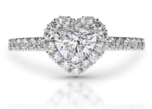
A unique hybrid of two different diamond cuts — the round brilliant and the marquise — pear shape diamonds are also a perennially popular choice for an engagement ring. This modified brilliant cut has the same number of facets as a round brilliant and displays almost the same degree of sparkle, but it is its signature silhouette that has made it a timeless classic, with pleasing curves leading to an elegantly tapered point.
Resembling a drop of water, the pear shape is said to symbolise the tears of joy that accompany your marriage. Invented in the 1400s, this classic cut is that rare thing: a classic that continues to feel very modern. A unique statement on the finger, it is traditional to wear the pointed end of the pear shape diamond facing towards your hand. However, the opposite, with the tip pointing upwards, is perfectly acceptable and preferred by many.
Resembling a drop of water, the pear shape is said to symbolise the tears of joy that accompany your marriage. Invented in the 1400s, this classic cut is that rare thing: a classic that continues to feel very modern. A unique statement on the finger, it is traditional to wear the pointed end of the pear shape diamond facing towards your hand. However, the opposite, with the tip pointing upwards, is perfectly acceptable and preferred by many.
Oval shape diamond
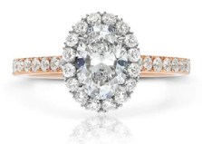
Oval shape diamonds are essentially an elongated round brilliant cut and possess a similar degree of fire and brilliance. Created by the Russian-born diamond cutter Lazare Kaplan in the 1950s, the oval cut is perfect if you are looking for a diamond that displays excellent sparkle and character.
The best, well-proportioned oval shape diamonds are perfectly symmetrical, with a length-to-width radio of between 1.25 and 1.50. Any lower and they will start to appear too rounded; any higher and they will look too stretched. Great value for money, they can cost up to 25% less than a round brilliant cut diamond of the same carat weight and display more surface area on the top of the stone, giving the illusion of a larger diamond. Their elongated shape also means they are very flattering on the hand, particularly if you have shorter fingers.
There is one factor to watch out for with oval shape diamonds. Almost every stone displays a unique phenomenon across the middle, a darker area in the shape of a bowtie, due to the way the light hits the diamond. The good news is that the better the cut, the less pronounced the “bowtie” effect. With the best quality diamonds — those with a symmetry grade of Very Good or more the GIA certificate — it is almost impossible to spot the bowtie with the naked eye.
The best, well-proportioned oval shape diamonds are perfectly symmetrical, with a length-to-width radio of between 1.25 and 1.50. Any lower and they will start to appear too rounded; any higher and they will look too stretched. Great value for money, they can cost up to 25% less than a round brilliant cut diamond of the same carat weight and display more surface area on the top of the stone, giving the illusion of a larger diamond. Their elongated shape also means they are very flattering on the hand, particularly if you have shorter fingers.
There is one factor to watch out for with oval shape diamonds. Almost every stone displays a unique phenomenon across the middle, a darker area in the shape of a bowtie, due to the way the light hits the diamond. The good news is that the better the cut, the less pronounced the “bowtie” effect. With the best quality diamonds — those with a symmetry grade of Very Good or more the GIA certificate — it is almost impossible to spot the bowtie with the naked eye.
Emerald cut diamond
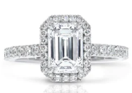
Emerald cut diamonds stand out among the diamond shapes because they are not primarily cut to enhance their scintillation. Rather than brilliant cut, these beautifully chiselled diamonds are step cut, with 58 parallel facets clearly visible inside the diamond that resemble steps or stairs.
One of the oldest diamond shapes in history, what this linear cut lacks in sparkle and brilliance it more than makes up for with its extraordinary elegance. Rectangular in shape, emerald cut diamonds were popular in the Art Deco era, when clean lines and angular motifs were all the rage, and it is this sleek geometry that continues to appeal today.
With its charmingly understated sparkle, this beautiful vintage diamond cut remains one of the most stylish choices for an engagement ring. An emerald cut diamond looks beautiful in a simple setting, with the stone the star of the show, or encircled by a halo of pave diamonds. They also work brilliantly as sumptuous side stones accompanying a central brilliant cut diamond. Be aware that, because of the large, smooth table facet at the top of the stone, they do reveal imperfections much more than a brilliant cut gem, so it is important to opt for a diamond with good clarity — at least VS2 or above on the GIA certificate.
One of the oldest diamond shapes in history, what this linear cut lacks in sparkle and brilliance it more than makes up for with its extraordinary elegance. Rectangular in shape, emerald cut diamonds were popular in the Art Deco era, when clean lines and angular motifs were all the rage, and it is this sleek geometry that continues to appeal today.
With its charmingly understated sparkle, this beautiful vintage diamond cut remains one of the most stylish choices for an engagement ring. An emerald cut diamond looks beautiful in a simple setting, with the stone the star of the show, or encircled by a halo of pave diamonds. They also work brilliantly as sumptuous side stones accompanying a central brilliant cut diamond. Be aware that, because of the large, smooth table facet at the top of the stone, they do reveal imperfections much more than a brilliant cut gem, so it is important to opt for a diamond with good clarity — at least VS2 or above on the GIA certificate.
Princess cut diamond
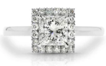
In the history of diamonds, the angular princess cut is a very new addition to the line-up of diamond shapes. Inspired by similar diamond cuts with the same name that were invented decades earlier, the arrival of a new princess cut in 1979 heralded something totally unique: a square shaped diamond with up to 76 facets (compared to the emerald cut's 58) that exhibited a similar degree of fire and scintillation to a round brilliant cut diamond.
Almost always square but occasionally more rectangular in shape, the sharp corners, bevelled sides and pyramidal shape of a princess cut diamond gives it a strikingly clean and modern appearance. An extremely popular alternative to the classic diamond shapes, there is one final reason to fall in love with princess cut diamonds: they generate the least amount of waste during the cutting and polishing process and are therefore great value for money.
Almost always square but occasionally more rectangular in shape, the sharp corners, bevelled sides and pyramidal shape of a princess cut diamond gives it a strikingly clean and modern appearance. An extremely popular alternative to the classic diamond shapes, there is one final reason to fall in love with princess cut diamonds: they generate the least amount of waste during the cutting and polishing process and are therefore great value for money.
Radiant cut diamond
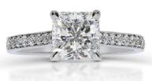
A unique hybrid cut with 70 facets that combines the elegance of an emerald cut with the brilliance of a round brilliant cut, radiant cut diamonds were first introduced in the 1970s. They share some similarities with the princess cut, including being square or rectangular in shape, but where the princess cut has square corners, those of the radiant cut are trimmed, making it less prone to chipping.
True to its name, the sparkle of a radiant cut diamond is second only to that of the round brilliant cut. This remarkable scintillation, combined with its elegantly angular proportions and excellent durability, makes it a captivating choice for a centre stone in an engagement ring.
True to its name, the sparkle of a radiant cut diamond is second only to that of the round brilliant cut. This remarkable scintillation, combined with its elegantly angular proportions and excellent durability, makes it a captivating choice for a centre stone in an engagement ring.
Cushion cut diamond
As its name suggests, cushion cut diamonds resemble the shape of a pillow, with gently rounded edges and corners. Rather than being cut to accentuate the sparkle of a diamond, the pattern of its facets encourages light dispersion, bringing out the fire within a stone — the rainbow flashes of colour that are revealed when a diamond is exposed to sunlight.
There is something inherently romantic about the cushion cut, which has enchanted lovers for well over a century. Reminiscent of the early brilliant cuts dating back hundreds of years, which are now referred to as “old mine cuts” and display a softened silhouette and subtle brilliance, cushion cut diamonds have genuine old-world charm.
A cushion cut diamond looks wonderful showcased in a single stone setting but is especially beautiful when encircled by a diamond halo, which emphasises its vintage allure. If you love the thought of an antique engagement ring but want the peace of mind of a newly crafted design, cushion cut diamonds are the stone for you.
There is something inherently romantic about the cushion cut, which has enchanted lovers for well over a century. Reminiscent of the early brilliant cuts dating back hundreds of years, which are now referred to as “old mine cuts” and display a softened silhouette and subtle brilliance, cushion cut diamonds have genuine old-world charm.
A cushion cut diamond looks wonderful showcased in a single stone setting but is especially beautiful when encircled by a diamond halo, which emphasises its vintage allure. If you love the thought of an antique engagement ring but want the peace of mind of a newly crafted design, cushion cut diamonds are the stone for you.
Why choose us?

DIALOGUE BETWEEN CLIENT
AND CRAFTSMAN
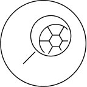
HANDCRAFTED JEWELS,
MADE IN HOUSE
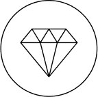
EXCEPTIONAL QUALITY
AND ATTENTION TO DETAIL

FREE FIVE-YEAR AFTER-
SALES SERVICE
shop by category
earrings
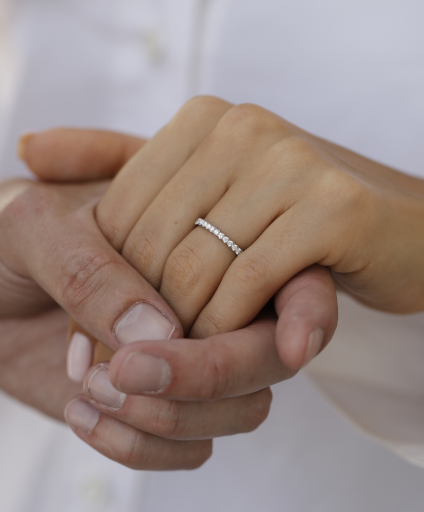
wedding rings
wedding rings
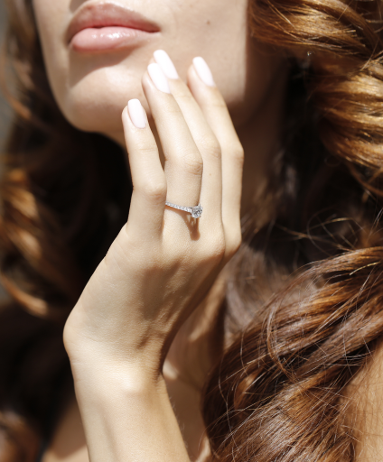
engagement rings
engagement rings